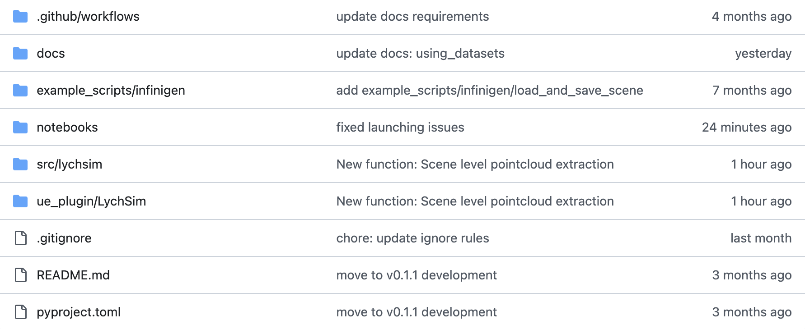
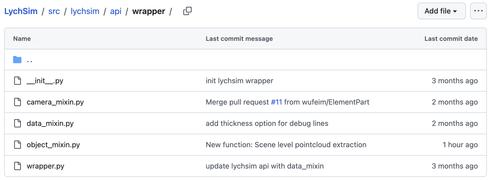
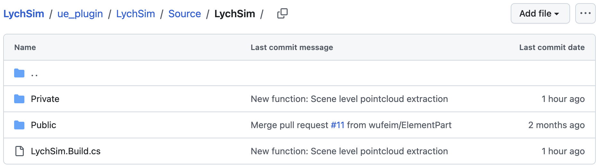

Development and Extensions#
In this tutorial we will first review the
Basics#
The structure of the LychSim codebase is shown below. The Python package lychsim is located in src/lychsim, while the Unreal Engine plugin written in C++ is located in ue_plugin/LychSim. In addition, we provide example scripts in example_scripts and demo notebooks in notebooks.

Codebase structure.#
The Python package lychsim implements helper functions to control the Unreal Engine simulation and data I/O. Notably some wrapper functions are implemented in src/lychsim/api/wrapper to enable simpler controls.

Python package.#
The Unreal Engine plugin LychSim is built on our previous UnrealCV plugin. From now on we will focus on explaining the code structure of this C++ plugin and how various functions are implemented.

Unreal Engine plugin.#
Command Parsing#
LychSim enables Unix/POSIX-style command-line interface (CLI), e.g.,
mycmd run -flag -arg=0
When executing a LychSim command, the command is first processed by the dispatcher function FCommandDispatcher::Exec (link). The raw command is parsed into positional, keyward, and flag arguments by LychSim::ParseTailWithFParse (link).
The parsed command is then executed by CmdUE->Execute (link), which corresponds to arguments of the handler function.
As an example, we update the location of an object in the Unreal Engine simulation. We first call the update_obj function that takes the object ID, (optional) new location and (optional) new rotation as inputs (link). Note that the location and rotation are processed as keyword arguments and the object ID is regarded as a standard positional argument.
class ObjectCommandsMixin:
def update_obj(self, obj_id, loc: list | np.ndarray = None, rot: list | np.ndarray = None) -> None:
params = ""
if loc is not None:
loc = ",".join(map(str, loc))
params += f" -loc={loc}"
if rot is not None:
rot = ",".join(map(str, rot))
params += f" -rot={rot}"
self.client.request(f"lych obj update {obj_id}{params}")
The command lych obj update car_01 -loc=0.5,0.2,0.0 will be parsed into positional arguments ["car_01"], keyword arguments {"loc": "0.5,0.2,0.0"}, and no additional flags.
Lastly the arguments are processed by the command handler FLychSimObjectHandler::UpdateObject (link)
FExecStatus FLychSimObjectHandler::UpdateObject(
const TArray<FString>& Pos,
const TMap<FString,FString>& Kw,
const TSet<FString>& Flags)
{
...
};
Note that the object location is always represented as a string during command parsing. The location will be parsed into a list of floats by the command handler itself (link)
LocStr.ParseIntoArray(Parts, TEXT(","), true);
Example: Developing A New Command#
In this example we develop a new camera command step by step. Suppose we want to implement a new camera command that returns a point map from the current view. We first define the function handler in ue_plugin/LychSim/Source/LychSim/Private/Commands/LychSimCameraHandler.h and ue_plugin/LychSim/Source/LychSim/Private/Commands/LychSimCameraHandler.cpp.
// ue_plugin/LychSim/Source/LychSim/Private/Commands/LychSimCameraHandler.h
class FLychSimCameraHandler : public FCommandHandler
{
public:
void RegisterCommands();
private:
FExecStatus GetPointMap(const TArray<FString>& Pos, const TMap<FString,FString>& Kw, const TSet<FString>& Flags);
};
// ue_plugin/LychSim/Source/LychSim/Private/Commands/LychSimCameraHandler.cpp
FExecStatus FLychSimCameraHandler::GetPointMap(
const TArray<FString>& Pos,
const TMap<FString,FString>& Kw,
const TSet<FString>& Flags)
{
...
};
Then we register the new handlers as callable commands in ue_plugin/LychSim/Source/LychSim/Private/Commands/LychSimCameraHandler.cpp.
void FLychSimCameraHandler::RegisterCommands() {
CommandDispatcher->BindCommandUE(
"lych cam get_pointmap",
FDispatcherDelegateUE::CreateRaw(this, &FLychSimCameraHandler::GetPointMap),
"Get point map in camera/world/OpenCV space"
);
}
Lastly we may implement helper Python functions in src/lychsim/api/wrapper/camera_mixin.py.
class CameraCommandsMixin:
def get_cam_pointmap(self, cam_id: int, space: str = "all") -> dict[str, np.ndarray]:
...